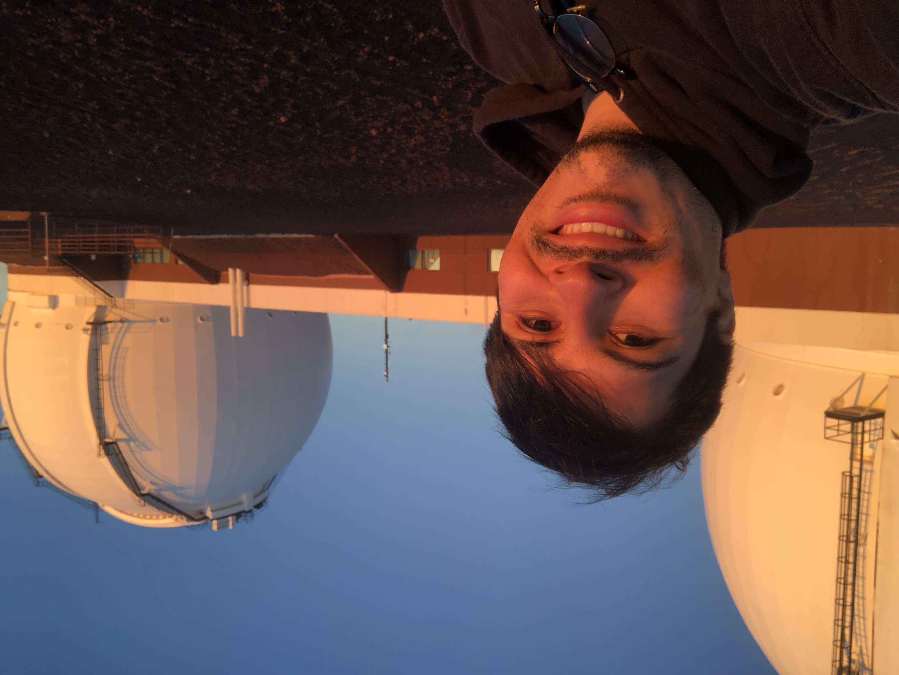

I am currently a Research Data Scientist at Google in Mountain View, California. I completed my PhD in Astronomy and Astrophysics the University of California, Los Angeles in 2023 under the supervision of Erik Petigura. I graduated from the California Institute of Technology in 2018 with a degree in Astrophysics. My research encompasses a broad range of topics related to the detection and characterization of exoplanets, including transit modeling, planet dynamics, and population demographics.
My current hobbies include running, bouldering, and attending concerts.
